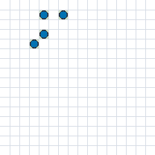
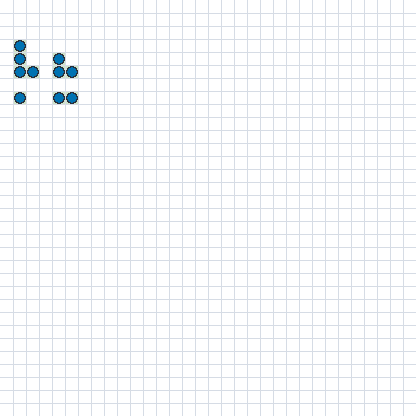
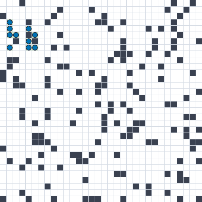
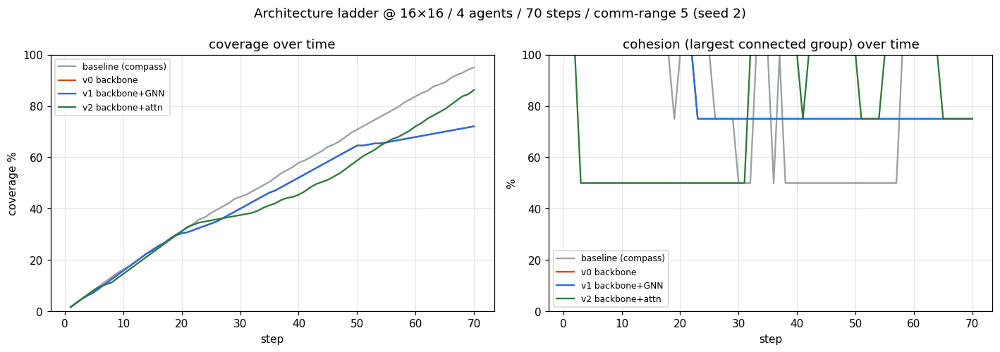
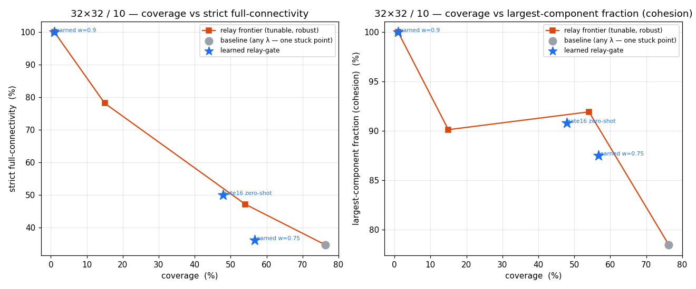
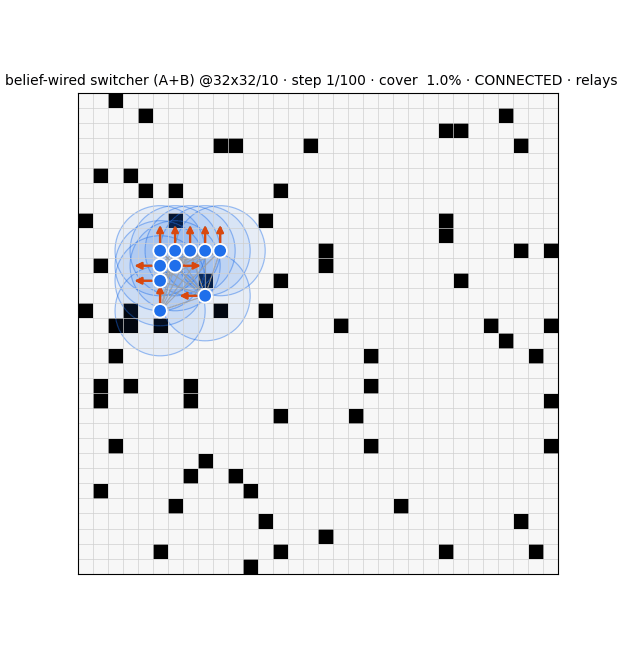
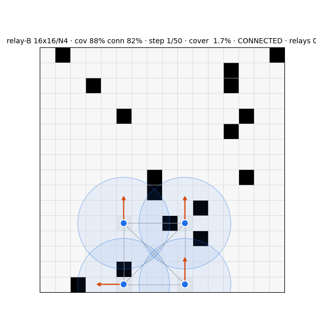
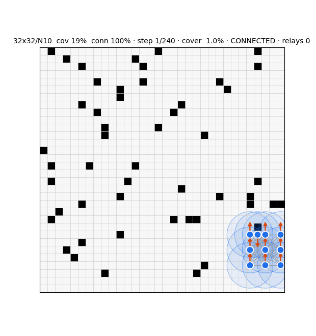
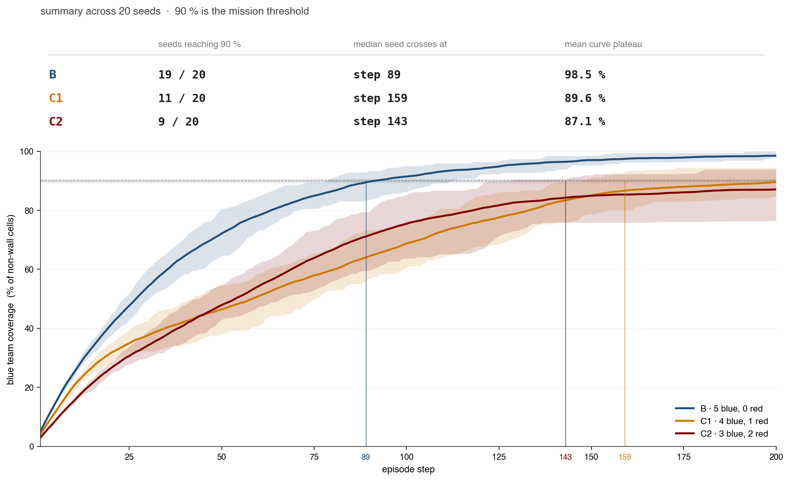
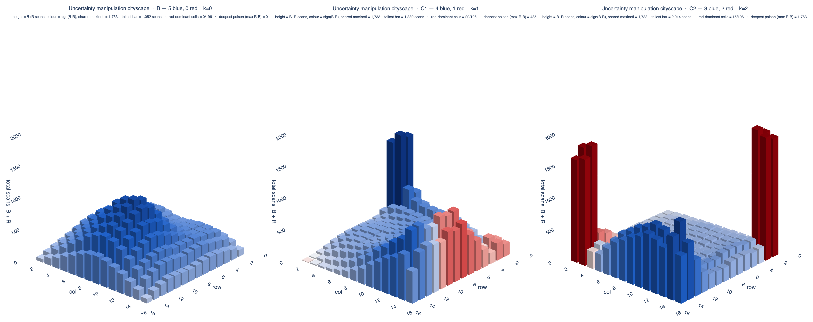

Experimental findings
The current-architecture results lead; the prior-architecture findings that motivated the 2026-07 pivot follow, then the resilience / adversarial core. Evaluation is stochastic-π (ε = 0), never argmax.
Difference-reward credit — the coverage lever
Paying each agent its per-agent marginal contribution (instead of one shared team reward) breaks the "huddle" into a sweep. On the 32²/10 four-map panel, credit beats the shared baseline on every map (2-seed mean):
| map · 32²/10 | shared coverage | credit coverage | Δ |
|---|---|---|---|
| open | 4.4% | 27.7% | +23.3 |
| rooms | 6.7% | 18.9% | +12.2 |
| mixed | 1.7% | 14.7% | +12.9 |
| crowded | 4.6% | 11.7% | +7.1 |
+7 to +23 points, 2–6× — the predicted huddle→sweep transition, with credit as the control parameter. But credit alone over-spreads and drops connectivity at scale (the new wall): every agent is paid to cover, nothing chooses to hold.
The mechanism is clearest at small scale — 16²/4 open floor, same seed, shared reward vs credit:


The relay backbone — recovering connectivity
An explicit relay role (a few agents holding the graph so explorers spread) under credit, at 32²/10. The active "anchor" relay dominates in open floor — more coverage and more connectivity, a genuine frontier shift; a static "hold" relay over-relays and hurts.
| 32²/10 | no-role · cov / conn | anchor relay · cov / conn | verdict |
|---|---|---|---|
| open | 27.9 / 77.4 | 30.0 / 84.7 | dominates — both up |
| crowded | 13.9 / 82.5 | 16.1 / 82.9 | weak dominance |
| mixed | 12.9 / 75.2 | 20.6 / 67.0 | +cov, −conn |
| rooms | 22.0 / 64.3 | 22.2 / 60.6 | no help (chokepoints) |


Watch these in the simulator — the credit huddle→sweep pairs and the relay arms.
Connectivity health — who stays together, who fragments
Replaying every trained checkpoint and measuring, per run, the fraction of steps the whole team is one connected component (from positions + comm range): 41 of 56 runs stay connected ≥ 90% of the time; 15 fragment — the simulator now splits these into a separate ⚠ Fragmented section. The fragmentation is not random; it lands exactly where the mechanism predicts:
| Stays connected (healthy) | Fragments |
|---|---|
| Every 16²/4 run — small world, easy to stay in range (≈100%). | 32²/10 credit-alone (no relay) — the sweep spreads past comm range, down to 30–48% connected. |
| 32²/10 with the active "anchor" relay — a backbone holds the graph while the rest cover. | 32²/10 "hold" relay — static relays over-freeze and cluster wrong, still fraying (47–63%). |


Same story as the coverage↔connectivity tables above, now seen frame-by-frame: credit spreads the team; only a few active relays buy that spread back into a connected sweep — and only once the world is big enough to need it.
What we learned
- The lever is the signal, not a module. Changing what each agent is paid for — its marginal contribution, not the team mean — moved coverage +7 to +23 points, more than any perception module ever did. The old architecture-chase was looking in the wrong place.
- Coverage and connectivity are separable knobs that compose. Credit owns coverage; an explicit relay role owns connectivity. Neither alone reaches both — but at 16²/4 they already do together (credit's coverage and a connected graph).
- Few active relays beat many static ones. The "anchor" relay (a handful, actively holding) dominates open floor; the "hold" relay (many, frozen) over-relays and hurts. "Bigger backbone" was the wrong instinct — a targeted backbone is right.
- Scale is where connectivity is won or lost. 16²/4 is connected for free; the real problem is 32²/10, and especially the chokepoint (rooms) maps, where the relay still can't find the doorway. That names the next build: relay positioning (climb the team's λ₂) plus an explicit connectivity-centrality reward.
- Trust the ruler before the number. The connectivity metric reproduced at 51% vs 77% for one identical config — so we state the coverage claims and hold the connectivity claims pending a deterministic re-measurement. That kept us from optimising noise.
Coverage ladder
- 3-variant PPO comm-coverage: independent (IPPO) 86.4% ≈ CTDE ≫ joint; IPPO emergently forms a stretched relay chain — decentralization wins.
- Clustered start rescues the joint variant (87.4%); zero-shot generalization to unseen obstacles.
- Anti-overlap reward pushes CTDE to 91.4% (>90%).
- FrontierAttnAC (frontier cross-attention + return-norm) reaches ~98% coverage and generalizes across grid sizes — but disperses the swarm (connectivity ~32%): the coverage–connectivity tension in its purest form.


Connectivity
- Local degree-floor (keep ≥ 1 in-range neighbor) dominates global giant-component / λ₂ leashes on both coverage and connectivity under partial information.
- Hard connectivity guardrail (mask moves that disconnect the comm graph) guarantees integrity AND beats the soft degree-floor by ~20 pts coverage — a hard constraint with free exploration within it.
Graph belief — transfer, reliability, few-shot
| @16×16/4 (trained) | @32×32/10 (zero-shot) | trivial baseline | |
|---|---|---|---|
| old snapshot estimator | 88% | ~trivial (no transfer) | — |
| GCRN (single split) | 95.9% | 77–81% | 45.9% |
| GCRN (5-fold CV, weight-decay 0.03) | 95.6 ± 0.4% | 72.5 ± 1.2% | 45.9% |
Few-shot: a single 32×32 fine-tuning map lifts zero-shot 76.7% → 80.2%, plateauing ~81% (8 maps) within ~1.3 pts of the 82.1% full-data ceiling, and beating from-scratch most in the 1-shot regime (+4.1 pts) — the size-invariant pretraining buys data efficiency.
Role-switching — transfer & health
| relay ratio | switch rate | P(relay | cut-vertex) | P(relay | non-cut) | |
|---|---|---|---|---|
| 16×16/4 (trained) | ~20% | 9.4%/step | 94% | 3% |
| 32×32/10 (zero-shot) | ~19% | 9.9%/step | 78% | 8% |
The structure-awareness transfers: the policy still relays cut-vertices ~4× more than redundant agents at the new scale, switching is balanced (no stuck-relay), relay ratio steady. The role decision is correct at scale; connectivity still fails for a structural reason (see the geometric wall).
Belief-wiring at 32×32 (held-out maps)
| policy | coverage | full-connectivity | cohesion | safety-viol |
|---|---|---|---|---|
| compass (no relay) | 70% | 20% | 68% | 6.0% |
| local switcher (zero-shot) | 60% | 36% | 80% | 5.0% |
| belief-wired (decision-only) | 64% | 13% | 64% | 8.7% |
| belief-wired (decision + action) | 64% | 13% | 64% | 8.7% |
The zero-shot local switcher (60 / 36) remained the best connectivity operating point; re-optimizing at 32×32 under a coverage-aware fitness destroyed its relay pattern — the geometric wall again.

Adversarial & compromise-sweep results (RedWithinBlue)
- Compromise-sweep headline: safe baseline S=46%, benign B=98.5%, compromised C1=89.6% / C2=87.1%; the misbehaviour-budget knee is at m=1 — a single compromised agent already drops the team below the 90% threshold, and m=2 inflates variance more than the mean.
- The strong channel is withholding, not corrupting. Actively injecting false belief (the MAP_UNKNOWN "belief-corruption" channel) is worth ≤1pp of damage; the real cost is post-detection exclusion-delay + redundant coverage — the team excludes the compromised agent's scans and re-covers. This sharpens (not contradicts) the paper's "leverage = withholding contribution to the shared belief" thesis.
- The quietest attacker is the most damaging. A "stay"/no-action adversary (+14.79pp) beats the trained red (+13.55pp) — co-evolved blue routes around red's predictable corner-camp, so doing nothing detectable is the stronger covert move.
- Damage scales with k, not ρ. Mission damage is ~10× more sensitive to the number of compromised agents (+5.3pp/agent) than to the per-step attack rate ρ (flat-to-defender-favourable). Both closed-form damage models (additive Σρ, concentration max-ρ) were falsified at the held-out cell (z>4).
- Co-evolution is a defender-side fragility, not a defence. Naive (non-co-evo) blue out-defends co-evo blue by ~7pp against the same red (z=7.18) — overfitting to the training adversary.
- Insider attackers buy almost nothing. An attacker initialized byte-identical to blue's trained policy is only ~3.5% more harmful (Cohen's d≈0.16) and leaves coverage statistically unchanged — initialization picks the entropy mode, not the harm level.
- The connectivity guardrail is dual-use. Damage is non-monotone in the disconnect-grace budget (attacker-optimal ~5 grace steps); at ε=∞ blue actually beats its ε=0 baseline (+0.089) — the hard guardrail had been partly helping the attacker by constraining blue's own motion.
- Monitoring implication: because damage manifests jointly across coverage, time, and the team's posterior, aggregate-coverage monitoring misses the threat — the posterior itself is a resilience signal computable from the team's own scans.
Last runs (2026-06-22) — coordination & generalization
Protocol: episode length FIXED at 100 steps; bigger worlds are compensated with more agents, not more time (extra time was the artifact that faked 100% coverage). New coordination metric: REDUNDANCY = (Σ per-agent coverage) / (unique team coverage) — 1.0 = perfect division of labor; higher = flooding/overlap.
Coordination diagnostic fixed 100 steps · 3 seeds
| grid / N | heuristic | learned-A | learned-B | ||||||
|---|---|---|---|---|---|---|---|---|---|
| cov | conn | redund | cov | conn | redund | cov | conn | redund | |
| 16×16 / N4 | 100% | 55% | 3.13 | 77% | 100% | 2.20 | 100% | 62% | 3.28 |
| 20×20 / N5 | 100% | 54% | 3.76 | 56% | 100% | 2.94 | 100% | 59% | 3.99 |
| 24×24 / N6 | 95% | 42% | 3.67 | 42% | 100% | 3.03 | 94% | 36% | 3.87 |
| 28×28 / N8 | 89% | 17% | 4.28 | 31% | 100% | 3.03 | 91% | 24% | 4.12 |
| 32×32 / N10 | 78% | 28% | 5.29 | 18% | 100% | 3.80 | 88% | 32% | 4.85 |
| 40×40 / N16 | 66% | 15% | 5.83 | 25% | 100% | 4.83 | 79% | 38% | 5.88 |
No controller divides labor: the redundancy floor is ≥ 2.2 everywhere, rising to ~6–8 at scale. learned-A holds connectivity at 100% only by huddling (coverage craters 77% → 25%).
Agent sweep @32×32 learned-B · does adding agents divide or overlap?
| N agents | coverage | connectivity | redundancy |
|---|---|---|---|
| N6 | 60% | 44% | 3.68 |
| N10 | 88% | 32% | 4.85 |
| N14 | 98% | 36% | 6.27 |
| N18 | 100% | 61% | 7.87 |
This is the proof that coverage is brute-force flooding, not coordination: redundancy nearly doubles (3.68 → 7.87) as agents are added while coverage climbs to 100% — adding agents floods rather than divides.
Generalization study (4 modes) train → zero-shot → few-shot
| mode | 16×16 (train) | 32×32 (train) | 40×40 (zero-shot) | relay% | verdict |
|---|---|---|---|---|---|
| baseline (w_conn=1.0) | 91 / 76 | 100 / 32 | 100 / 22 | 25% → 1% | connectivity collapses with scale |
| adaptive (Lagrangian λ→1.5) | 40 / 100 | 10 / 100 | 4 / 100 | 94–100% | degenerate clump: everyone relays, coverage dies |
| fiedler (exact λ₂ oracle features) | 100 / 60 | 100 / 16 | 100 / 14 | 0–2% | null/worse: a perfect signal produced NO relays |
| episodes (2× length) | 100 / 86 | 98 / 71 | 72 / 72 | 67–87% | roles emerge — but only by violating fixed-100 (more time) |
The adaptive and fiedler modes are failures: the Lagrangian chases the trivial all-relay clump, and a perfect global-connectivity oracle (exact eigendecomposition λ₂ + each agent's own Fiedler component) produced essentially no relays and connectivity worse than baseline at scale — information is not the bottleneck. The episodes mode is the only one where roles emerge and connectivity holds, but it "works" only by spending 2× the time — emergence appears just when we cheat the clock.
Architecture tournament & parameter sweep
- Graph attention does not break the geometric wall. At 32×32 the best variants cap at ~63–67% coverage / ~28% connectivity (gattn-d4 63/28, gattn-l 67/19). Deeper attention gattn-d6 just trades coverage for connectivity (46–50 / 52–59).
- Regime-B sweet spot is w_conn=1.0 (16×16 94 / 99, relay 26%). Pushing w_conn ≥ 2 Goodharts into the clump: 22 / 100 at 16×16 with relay 100% — full connectivity bought by abandoning coverage entirely.



Sibling studies — detection & testbed
Early-warning detector — temporal graph embeddings GWU advanced-ML report · w/ Tejaaswini Narendran · 4pp
This sibling report (Mehralizadeh & Narendran, George Washington University) asks whether mission degradation can be caught before it becomes visible as failure. The setup is a grid exploration mission with four homogeneous agents (N=4) on a 32×32 grid, horizon Tmax=500 steps, with connectivity enforced as a hard mission constraint — formal mission failure is the first step the time-varying communication graph disconnects (proximity by Chebyshev distance). Nominal behavior is drawn from four policy families (structured lawn-mower sweeping, pure random walk, ε-greedy with structured drift, frontier-biased coverage) so the embedding encodes coordination structure rather than one policy's motion artifacts. Adversarial perturbation overrides a random 25% or 50% subset of agents with uniform-random actions over random time windows.
- Pipeline. Each mission trajectory becomes a temporal graph (nodes = timesteps, labeled by deviation count, connectivity indicator, and average degree). Weisfeiler-Lehman relabeling (H=2 iterations) builds a multiscale temporal fingerprint, Graph2Vec embeds each mission into ℝ16, and a k-nearest-neighbor classifier does the early-warning call — a deliberately simple, non-parametric classifier chosen to show the signal is already separable in the geometry, with no deep discriminative model.
- Degradation is detectable from short prefixes. The classifier is trained only on mission prefixes of length 150 steps — well before the typical break time — yet nominal missions concentrate in a compact region of the embedding while degraded missions form a smooth manifold that diverges progressively along the primary principal component. Degradation is a continuous structural process visible in latent space long before explicit disconnection.
- Broken vs. rogue agents separate. Permanently failed ("broken") agents and adversarially deviating ("rogue") agents land in measurably different regions: broken agents produce a gradual loss of coordination density, while rogue agents inject high-variance topological disruption. The embedding captures not just degradation severity but its mode.
- Distance encodes remaining lifetime. Missions that fail early align toward the extreme-degradation region; longer-lasting missions stay near the nominal cluster — latent distance from the nominal manifold correlates with remaining mission lifetime, giving a continuous early-warning signal rather than a binary flag.
Figure 1 (PCA space with kNN probability surface, described in prose since no asset was exported): the 16-dimensional mission embeddings are projected to two principal components. Nominal-mission points (one dot per 150-step prefix) cluster tightly in one region while broken-mission points fan outward; overlaid is a smooth kNN decision surface colored by P(mission broken), shading continuously from low probability over the nominal cluster to high probability across the degraded fan. The continuity of that surface — not a sharp wall — is the figure's whole point: it shows the early-warning score is graded, so a threshold can trade off detection delay against false alarms.
ExoRL — the connectivity-constrained exploration testbed ICML-2026-formatted · 7pp · published-form sibling of zymera_env
The published-form testbed paper for the connectivity-constrained decentralized exploration environment. A swarm of N agents (headline runs use N=4) must maximize coverage of a discrete grid (32×32 in the headline) within a fixed horizon, acting from local sensing plus one-hop neighbor messages — centralized training, decentralized execution. The base reward is the incremental coverage gain cov(t+1) − cov(t).
- Shaped reward decomposition (five weighted terms + terminal bonus). The per-step shaped reward is
r(t) = wnew·Δcov(t) − wtime − wsens·ovsens(t) + wcomm·ovcomm(t) − wbreak·𝟙[λ₂(t+1) ≤ ε]
a positive term for newly explored area (wnew), a small per-step time cost to discourage dithering (wtime), a redundant-sensing-overlap penalty (wsens), a positive shaping term rewarding non-fragile local communication structure (wcomm), and a large penalty on connectivity violation with immediate termination (wbreak). At the horizon a terminal mission bonusrT = wfinal·cov(T)is added. The overlap terms are lightweight shaping signals (normalized sensing-footprint overlap; normalized neighbor-graph edge density / average degree) and are swappable in ablations. - Algebraic-connectivity breakage criterion. Mission breakage is declared at the first step where the algebraic connectivity (second-smallest Laplacian eigenvalue) of the neighbor graph satisfies λ₂(t) ≤ ε for tolerance ε > 0, and the episode terminates immediately. This permits sparse chain-like topologies while preventing fragmentation into disconnected subteams — connectivity is a hard feasibility condition, not a soft penalty in the headline.
- Headline result. The learned four-agent nominal policy produces a perimeter-first-then-inward-loops pattern and reaches ~89.3% coverage (stable above 90% in training; Fig. 2 nominal panel at step 445 shows 89.3%). Injecting a single mild execution-time disturbance — biasing one agent toward the STAY action without altering the other three — drags the whole team down to ~68.0% coverage at the end of the horizon (step 500). The biased agent becomes a coordination drag: the team spends part of its fixed budget compensating for the reduced mobility while preserving connectivity, which slows exploration and amplifies a seemingly small single-agent deviation into a large mission-level loss.
Stealth-attacks compromise sweep — finer detail 16×16 · N=5 · k∈{0,1,2} · 20 seeds
- Coverage and degradation by budget k (mean over last 100 training episodes, 20 seeds): benign B (k=0) 98.5 ± 2.3%, C₁ (k=1) 89.6 ± 3.7%, C₂ (k=2) 87.1 ± 7.6%. Degradation ΔJ is 9.0 pp at k=1 and 11.4 pp at k=2, with diminishing per-agent returns — 9.0 then 5.7 pp per compromised agent. Brittleness (seed-to-seed s.d.) roughly doubles from C₁ to C₂ (σ ratio 2.06).
- Statistical significance (Welch's t, Cohen's d; n=20/condition). B vs C₁: ΔJ 8.98 pp, t=9.27, p<10⁻³, d=2.93. B vs C₂: ΔJ 11.43 pp, t=6.42, p<10⁻³, d=2.03 (both survive Bonferroni at α=0.05/3). C₁ vs C₂ is NOT significant: ΔJ 2.45 pp, t=1.29, p≈0.21, d=0.41 — the second compromise shifts the mean only modestly and shows up mostly as variance.
- Seeds reaching the 90% mission threshold: 19/20 at B, 11/20 at C₁, 9/20 at C₂ — even one compromised agent removes nearly half the seeds from the set that completes the mission within budget.
- Visit concentration (max times any single agent revisits one cell). Compromised agents hoard scans far more sharply than nominal blue: red 660 per agent at C₁ and 915 at C₂, against a nominal blue baseline of 210 — roughly 3–4×. This concentration is the mechanism by which the attacker reshapes the team's shared posterior.
- Network sizes: blue per-agent actor and the k=1 red actor are 20,229 parameters each (23→128→128→5); the central critic at N=5 is 31,489 (n·23→128→128→1); the k=2 joint-red actor is 23,818 (46→128→128→10).

